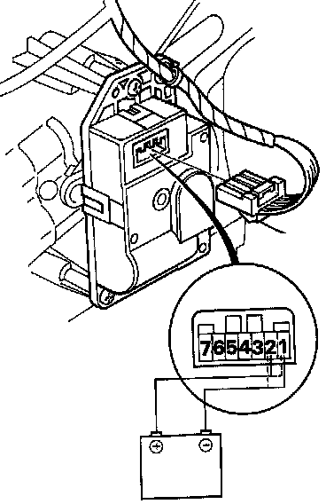
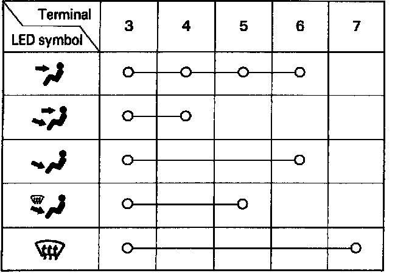

Mode Control Motor
Mode Control Motor Test
1. Disconnect the mode control motor connector, turn the ignition switch ON and move the blower switch to the middle setting.
2. Connect battery power to the No.1 terminal of the mode control motor, and connect ground to the No.2 terminal. The mode control motor should run, and stop at VENT.
If it doesn't, reverse the connections; the mode control motor should run, and stop at DEF.
NOTE: If the mode control motor does not run, remove it, and check the mode control linkage and doors for smooth movement. If the mode control linkage and doors move smoothly, replace the mode control motor.
3. Plug the connector back into the motor. Operate the mode switch on the heater control panel to each mode. Verify that the mode control motor has moved to the selected position by checking the air flow for the mode selected.
NOTE: If the motor did not move, turn the ignition switch OFF and disconnect the mode control motor connector. Turn the ignition switch ON and connect battery power to No.1 and No.2 terminals as shown in step 2. Power the mode control motor to move the doors to the mode selected.

4. Disconnect the mode control motor connector at each mode selected and check for continuity between the motor terminals according to the table below.
5. Replace the mode control motor if there is no continuity for any one mode selected.